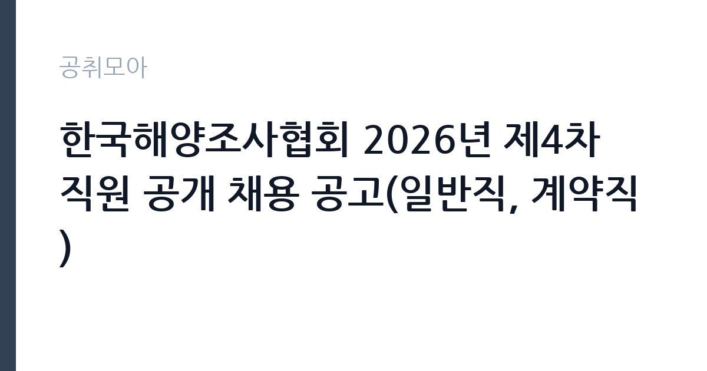

[공공기관] 한국해양조사협회 2026년 제4차 직원 공개 채용 공고(일반직, 계약직)
한국해양조사협회 · 서울 · 마감 2026-11-17 (D-15) · 출처 나라일터

한눈에 보는 모집 조건
| 기관 | 한국해양조사협회 |
|---|---|
| 공고명 | 한국해양조사협회 2026년 제4차 직원 공개 채용 공고(일반직, 계약직) |
| 고용형태 | 기간제 |
| 근무지 | 서울 |
| 게시일 | 2026-11-02 |
| 마감일 | 2026-11-17 (D-15) |
지원자격, 이렇게 읽으세요
- 일반직(5급) 1명 일반직(8급) 3명 계약직(7급상당) 1명 계약직(8
- 접수 ~2026-11-17 마감
- 세부 조건은 원문 공고문 확인
기간제 근로자는 근로계약 기간이 정해진 신분입니다. 계약 기간과 갱신 가능 여부가 근로계약서에 명시되며 기간 만료 시 근로관계가 종료됩니다. 결원 보충이나 특정 사업 기간에 맞춰 채용되는 경우가 많아 업무 범위가 명확합니다. 이번 공고는 한국해양조사협회에서 직접 진행하는 자체 전형으로, 응시자격과 제출서류는 공고문에 항목별로 제시됩니다. 직무별 요건이 뚜렷하게 다릅니다. 해양조사·정보는 해당 기술 분야 기사 자격, 산업기사 자격 후 2년 이상 경력, 기능사 자격 후 3년 이상 경력, 관련 학사 학위 등 가운데 하나를 충족하면 됩니다. 일반행정(국제협력)은 영어 통·번역 실무경력 10년 이상이거나 통번역 대학원 졸업 후 8년 이상 등 높은 경력 요건이 붙습니다. 전산정보는 정보처리 기사 이상 자격이 기준입니다. 계약직 8급 일반사무는 학력·전공 제한 없이 업무 수행 능력으로 평가합니다. 서류는 접수 마감 이후 보완이 되지 않으므로 자격 요건과 증빙 서류를 마감 전에 모두 갖춰야 합니다. 공고문에 명시된 우대 사항은 해당 여부를 확인해 증빙을 첨부해야 가점이 반영됩니다. 경력 요건은 총 경력이 아니라 해당 직무 경력만 인정하는 경우가 있으니, 증명서의 직무 기술을 함께 확인하십시오.
이 공고의 포인트
이 공고의 첫 번째 포인트는 고용 형태입니다. 계약 기간이 정해져 있어 근무 종료 시점이 명확합니다. 그만큼 짧은 기간에 어떤 실적을 남길지가 중요해집니다. 두 번째는 업무 범위가 명확하다는 점입니다. 해양조사·정보 / 일반행정 직무로 채용되므로 배치 이후 담당 업무가 크게 흔들리지 않습니다. 세 번째는 근무지입니다. 서울 지역 근무로 접근성은 좋지만 그만큼 지원자가 몰리는 지역이므로 경쟁률을 넉넉히 잡아야 합니다. 채용 규모가 크지 않아 면접 비중이 높은 전형이 될 가능성이 있습니다. 같은 직무로 함께 올라온 공고 가운데 접수 마감이 가장 늦은 편이라 준비 시간을 상대적으로 확보할 수 있습니다. 다만 선발 인원이 1명으로 많지 않아 자격을 갖춘 지원자가 몰리면 경쟁률이 높아질 수 있습니다.
전형은 어떻게 진행되나
채용 절차는 공고문에 안내된 순서대로 진행되며, 서류 접수 마감 후에는 추가 접수나 서류 보완이 이뤄지지 않는 것이 원칙입니다. 서류심사에서는 응시자격과 제출서류의 형식 요건을 기계적으로 확인하므로, 경력 증명서의 기간과 직무 내용이 공고의 요건과 정확히 맞아야 합니다. 면접은 지원자 수에 따라 집단면접과 개별면접으로 나뉘고, 직무 관련 질문과 상황 대응 질문이 함께 나옵니다. 합격자 발표는 개별 통보 또는 홈페이지 게시로 이뤄지며 이후 임용 절차가 진행됩니다. 제출서류 원본은 최종 단계에서 다시 요구되는 경우가 있어 사본과 함께 보관하십시오.
원문에서 확인한 전형 방식
[한국해양조사협회 공고 2026-43호] 해양조사•정보의 품질향상과 관련 자료의 수집•제공 등을 통해 해양정보산업을 이끌어가는 한국해양조사협회는 다음과 같이 전문지식과 능력을 갖춘 유능한 인재를 모시고자 합니다. 2026년 11월 2일 한국해양조사협회 이사장 ○ 채용분야 - 일반직 5급 : 일반행정_국제협력 1명 - 일반직 8급 : 해양조사·정보_ 해양조사·정보 2명 일반행정_전산정보 1명 - 계약직 7급상당 : 해양조사·정보_해양조사·정보 품질관리 1명 - 계약직8급상당 : 일반행정_일반사무 1명 ○ 채용기간 : 2026. 11. 2.(월) ~ 2026. 11. 17.(화) 14:00까지 ○ 선발방법 : 서류, 필기(일반직에 한함), 면접 ○ 문 의 처 : 1522-4176 * 일정 및 응시자격 등 자세한 사항은 첨부파일을 참조하여 주시기 바랍니다. 한국해양조사협회 입사지원시스템 https://khra.brms.k
이런 분께 추천해요
- 지원 분야의 자격·경력 요건을 충족하는 분
- 해양 자료 처리나 국제협력 실무 경험이 있는 분
- 일반직 필기전형을 준비할 수 있는 분
지원 전 체크리스트
- 응시자격 요건과 경력 기준을 충족하는가 — 경력은 증명서로 입증해야 합니다
- 계약 기간과 근무 시작일·종료일을 확인했는가
- 제출서류 목록을 모두 준비했는가 — 누락 시 서류 단계에서 탈락합니다
- 접수 마감 2026-11-17 이전에 접수 방식을 확인해 제출했는가
모집 일정과 제출 타이밍
2026-11-02에 공고가 올라왔고 접수는 2026-11-17까지입니다. 남은 기간은 15일이며, 이 기간에 자격증 사본과 경력증명서, 주민등록등본 같은 기본 서류를 모두 준비해야 합니다. 경력증명서는 발급에 며칠이 걸리는 경우가 있으니 가장 먼저 신청하십시오. 접수는 온라인과 우편·방문으로 나뉘는 경우가 많고, 우편 접수는 도착 기준으로 판정되므로 마감일 소인만 믿으면 안 됩니다. 면접 일정은 서류 발표 후 개별 통보되므로 제출 후에도 연락을 받을 수 있도록 유지해야 합니다. 접수 첫날에 몰리면 시스템 접속이 지연될 수 있으므로 오전 시간대 제출이 안전합니다. 서울 근무지는 대중교통 접근성이 좋은 대신 주차와 통근 시간이 변수입니다. 출퇴근 경로를 미리 확인하십시오. 마감까지 여유가 있어 자격 요건을 천천히 확인하고 준비할 수 있습니다. 선발 인원이 한두 명 수준이라 지원자 개개인의 서류 완성도가 그대로 평가에 반영됩니다.
직무 이해하기: 공공기관
한국해양조사협회는 해양조사와 해양정보의 품질 향상, 자료 수집·제공을 담당하는 해양수산부 산하 기관입니다. 이번 4차 채용은 일반직 5급 일반행정(국제협력), 일반직 8급 해양조사·정보 2명과 일반행정(전산정보), 계약직 7급상당 해양조사·정보 품질관리, 계약직 8급상당 일반사무를 함께 모집합니다. 해양조사·정보 직무는 수로 측량 자료와 해양정보를 처리하고 품질을 관리하며, 일반행정은 국제협력이나 전산정보 운영을 맡습니다. 일반직과 계약직은 신분과 처우가 다르므로 모집분야 표에서 본인 행을 먼저 확정해야 합니다. 현장 업무와 사무 업무의 비중은 기관의 사업 일정에 따라 계절별로 달라집니다.
자기소개서 작성 팁
지원서 첫 문단에서 지원 분야와 직급을 분명히 밝히십시오. 다섯 개 분야가 한 공고에 담겨 있어 어느 자리에 지원했는지 드러나지 않으면 준비도가 낮게 평가됩니다. 해양조사·정보는 참여한 조사 사업과 처리 자료량, 품질 관리 방식를 수치로 제시하고, 일반행정은 수행한 국제 협력이나 전산 운영 실적을 구체적으로 쓰십시오. 직무 경험이 많지 않다면 경험의 양보다 과정을 구체적으로 쓰는 편이 낫습니다. 어떤 상황에서 무엇을 판단했고 어떤 결과가 나왔는지 순서대로 서술하면 신뢰가 생깁니다. 지원 동기와 기여 방안은 한 문단씩 짧게 유지하고, 가장 자신 있는 경험에 분량을 몰아주십시오. 마지막 문장은 포부보다 구체적인 실행 계획으로 끝내는 것이 좋습니다.
면접 준비 포인트
면접은 지원 분야의 실무를 기준으로 진행됩니다. 해양조사·정보 지원자는 다뤄본 측량 장비와 자료 처리 소프트웨어, 품질 검수 절차를 구체적으로 답하십시오. 일반행정(국제협력)은 통·번역 실적과 국제기구 협업 경험이 핵심 질문입니다. 일반직은 필기전형이 포함되므로 전공 지식과 법령 이해를 함께 준비해야 합니다. 답변은 상황, 판단, 조치의 순서로 정리하면 전달이 분명해집니다. 모르는 질문에는 모른다고 밝히고 확인 방법을 제시하는 편이 억지 답변보다 낫습니다. 마지막에는 근무 의사와 함께 2026-11-17 이후 일정에 언제든 응할 수 있다는 점을 전달하십시오. 직무 특성상 체력이나 근무 시간에 대한 질문이 나올 수 있으므로 솔직하게 답하고 관리 계획을 함께 제시하십시오.
급여·근무조건 읽는 법
한국해양조사협회는 알리오 경영공시 대상 기관으로 정규직 평균보수와 신입 초임이 매년 공시됩니다. 다만 일반직 5급·8급과 계약직 7급·8급상당은 적용 임금 기준이 달라 공시 평균값을 그대로 적용할 수 없습니다. 일반직은 협회 임금규정의 직급별 호봉을, 계약직은 계약 연봉과 근무 기간을 기준으로 봐야 합니다. 구체적인 금액과 수당 항목은 공고문 처우표에서 확인하십시오. 2026년 적용 최저임금은 시급 10,320원, 월 환산 2,156,880원(주 40시간·209시간 기준)입니다. 고용노동부 고시 제2025-47호로 확정된 금액입니다. 공고문에 금액이 제시되지 않은 항목은 원문 보수표나 처우 설명에서 확인해야 하며 확인되지 않은 수치는 쓰지 않는 것이 원칙입니다. 비교할 때는 월 급여뿐 아니라 상여·명절휴가비·복지포인트·초과근무수당까지 포함한 연간 총액으로 계산하십시오. 기간제라면 계약 기간 동안의 총액을, 무기계약이라면 호봉 상승과 정년까지의 누적 소득을 기준으로 판단하는 편이 정확합니다.
자주 묻는 질문
- 선발 인원은 몇 명인가요?
공고문 기준 1명입니다. 직종별로 인원이 나뉘는 경우가 있으니 모집분야 항목을 함께 확인하십시오. - 근무지는 어디인가요?
서울 지역의 한국해양조사협회 소속 근무지입니다. 세부 주소와 출퇴근 조건은 원문 공고문에서 확인할 수 있습니다. - 보수는 얼마인가요?
채용 신분(기간제)과 기관 임금 규정에 따라 정해지며 구체적인 금액은 공고문 처우 항목에 제시됩니다. 금액이 공개되지 않은 경우에는 원문의 보수표를 확인하십시오.
함께 보면 좋은 공고
[공공기관] 2026년 한국특허정보원 체험형 청년인턴 채용 — 마감 2026-11-18[공공기관] 한국폴리텍대학 진주캠퍼스 행정지원직(사무직원 휴직 대체인력) 채용 공고 — 마감 2026-11-10[공공기관] 대구경북첨단의료산업진흥재단 2026년 3차 정원외 계약직원 채용공 — 마감 2026-11-17출처: 나라일터 공개정보를 바탕으로 공취모아가 정리한 안내글입니다. 모집 조건·일정은 변경될 수 있으니 지원 전 반드시 원문 공고문을 확인하세요. 본 글은 정보 제공용이며 합격을 보장하지 않습니다.